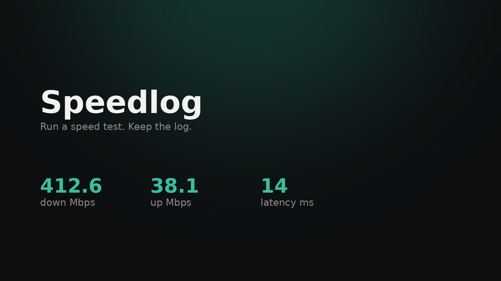

Speedlog measures download, upload, latency and jitter from inside Obsidian and writes every run to your vault as a note with front matter. Label your networks, compare against their medians, chart the history with Bases or Dataview.

A one-off test is a browser tab. A log tells you which network was slow, when it started, and whether the new router helped.
Latency probes, a warm-up, then sized downloads and uploads. Accurate runs four streams in parallel, the way browser speed tests do, and measures latency while the link is saturated. Light keeps a run under 10 MB.
Front matter with download_mbps, upload_mbps, latency_ms, jitter_ms, label, server and more. A callout shows the numbers and how they compare to that label's median.
"home wifi", "office", "phone hotspot" — type it once, pick it from a chip next time. Medians, best and worst are tracked per label so a hotspot doesn't drag down your fibre.
Summary.md holds every label's numbers and the last 7 days, with links to each run. Updated after every test.
Last result, live progress, a sparkline and recent runs in the sidebar. The status bar shows the last numbers; click to run again.
Run on startup once a day, or every N minutes. Both off by default, and skipped on phones and tablets unless you say otherwise.
Three files and a toggle. No build step, no account.
main.js, styles.css and manifest.json from the latest release..obsidian/plugins/speedlog/ inside your vault.speed.cloudflare.com, and only while a test runs. Balanced, the default, moves about 60 MB down and 15 MB up; Light about 7 MB; Accurate about 250 MB.Each run is one Markdown file:
---
download_mbps: 412.6
upload_mbps: 38.1
latency_ms: 14
jitter_ms: 2.3
profile: balanced
label: "home wifi"
server: "Cloudflare · EWR · US"
platform: "desktop · linux"
trigger: manual
duration_s: 11.8
date: 2026-09-17T14:22:33-07:00
tags: [speedlog]
---
> [!info] Speed test · Thu 17 Sep, 14:22 · home wifi
> **412.6 Mbps** down · ▲ 6% vs median
> **38.1 Mbps** up · ▼ 3% vs median
> **14 ms** latency · ±2.3 ms jitterGrouped under Test, When to run and Notes.
| Setting | What it does |
|---|---|
| Profile | Light (about 7 MB, for metered links), Balanced (single stream, about 60 MB), Accurate (four parallel streams and latency under load, about 250 MB). |
| Time cap | A run stops after this many seconds and reports what it has. |
| Run on startup | One test 30 s after the vault opens, at most once a day. Off by default. |
| Repeat every | Never, or 30 minutes to 24 hours. Off by default. |
| Allow scheduled runs on mobile | Off: startup and interval runs skip phones and tablets. Manual runs always work. |
| Folder, filename format | Where run notes go and how they are named. Default Speed tests/, YYYY-MM-DD HHmmss. |
| Keep Summary.md updated | Rewrite the summary note after every run. |
| Status bar | Show the last result; click it to run again. |
| Command | What it does |
|---|---|
| Run speed test | Runs a test with the current label and writes the note. |
| Open panel | Opens the Speedlog sidebar. |
| Open summary note | Rewrites and opens Summary.md. |
Same site, a different glow per project.